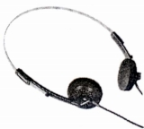
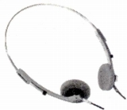

SOUNDEVICE（サウンデバイス）
1978年に創業したエミックのオーディオブランド。かつて、秋葉原の丸善無線などで展示されていた低価格なスピーカーやアンプを主力としたブランドだったが、現時点での動静は不明。このページに収録するのはStereo Sound YEAR BOOK 1982及び1984に収録の機種。当時流行のSONYのMDR-3などのような小型・軽量路線。これ以外のモデルも存在したとおもう。
�T.Stereo Sound YEAR BOOK 1982に収録の機種

(SDH-500)�U.Stereo Sound YEAR BOOK 1984に収録の機種
